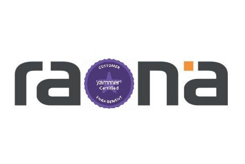

Raona completa el “Yammer Customer Engagement Program Certification” 32

La certificación acredita a Raona como socio clave en la implementación de esta tecnología social
Raona anuncia que ha completado el “ Yammer Customer Engagement Program Certification”, el cual ha sido desarrollado para formar y certificar a los asistentes como socios clave en la implementación de esta tecnología social así como en la prestación de soporte a los clientes que se embarquen en un viaje social.
La empresa social ofrece una oportunidad para que las organizaciones funcionen de una forma diferente y los clientes requieren a menudo de un apoyo adicional para implementar la tecnología y comprender la transformación cultural requerida.
“Gracias a la participación en el “Yammer Customer Engagement Program” ahoraestamos mejor preparados para ayudar a nuestros clientes a impulsar la adopción de la empresa social dentro de las organizaciones” explica Pablo Peris, Director de Raona UK.
Por su parte, Jorge Ramo, Director de Proyectos en Raona, afirma “ Podremos aportar un gran valor en la prestación tecnológica y los servicios de consultoría para clientes ”.
Raona participó en el “Yammer Customer Engagement Program”, el cual incluye una formación específica para obtener la certificación como usuarios avanzados, administradores y gestores de comunidades. Para obtener dichas certificaciones, se requiere completar una variedad de actividades, tales como una serie de talleres, cursos en línea y otras oportunidades de capacitación. Los participantes recibieron las herramientas necesarias para guiar a los clientes hacia el éxito de la adopción social en la empresa y adaptar sus iniciativas empresariales específicas dentro de Yammer.